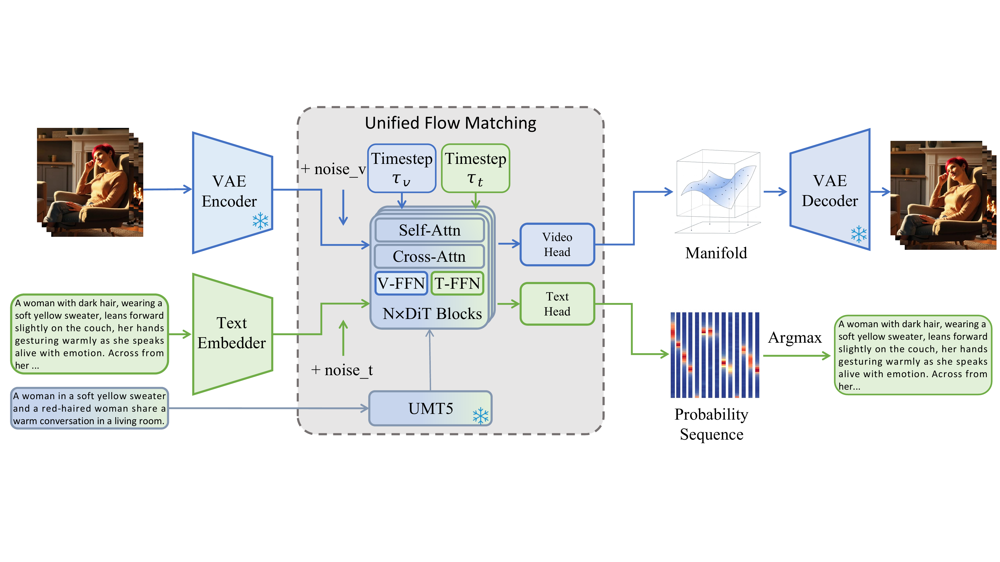
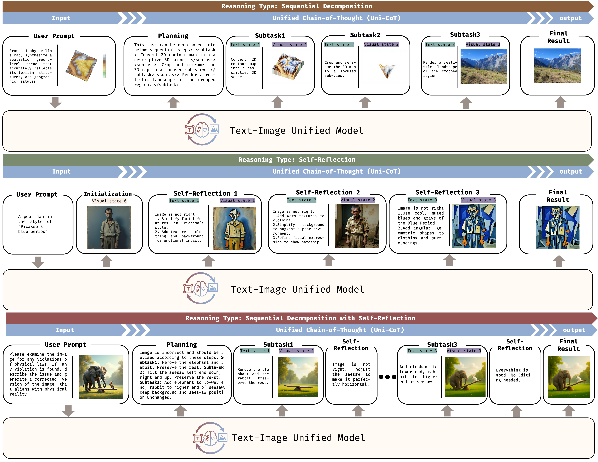
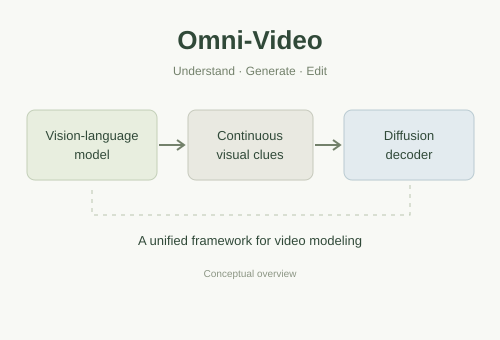
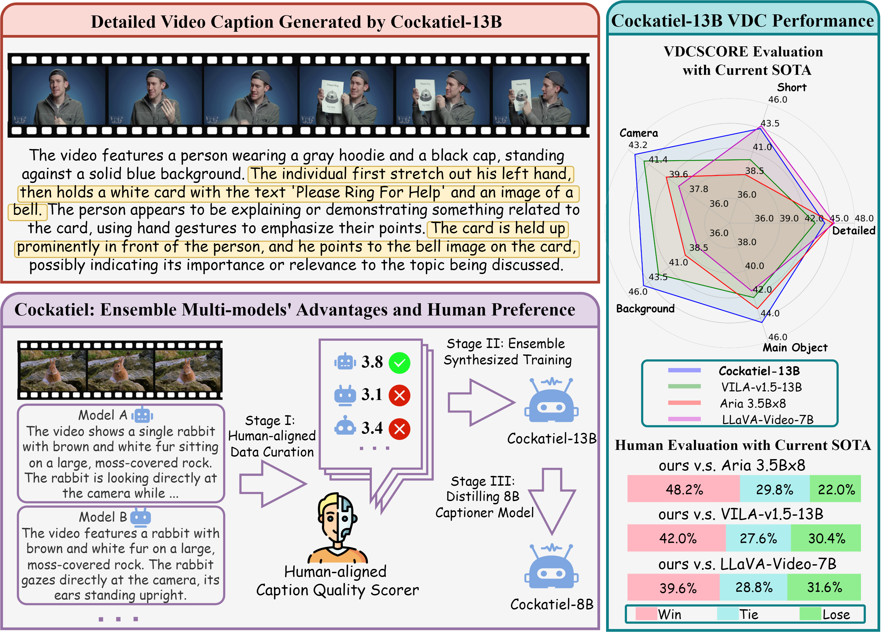

Uni-ViGUUni-ViGU: Towards Unified Video Generation and Understanding via A Diffusion-Based Video Generator
Bringing video understanding into a diffusion-based video generator through unified flow matching and prior-preserving training.
I am a first-year Ph.D. student at MAC Lab, Xiamen University, supervised by Prof. Rongrong Ji.
My research interests include multimodal understanding and generation, embodied intelligence, and generative models.
Previously, I spent one year as a full-time researcher at the Shanghai Academy of AI for Science. I received my master's degree in Artificial Intelligence from Soochow University, advised by Prof. Ziqiang Cao, and my bachelor's degree in Computer Science and Technology from Hefei University of Technology.
I enjoy working on challenging, useful, and open-source projects. Feel free to contact me at fr0zencrane@163.com or via WeChat (FrozenCrane). I’m always open to academic discussions and collaboration.
* Co-first authors

Uni-ViGUBringing video understanding into a diffusion-based video generator through unified flow matching and prior-preserving training.

Uni-CoTA two-level reasoning framework that combines global planning with local, interleaved visual and textual reasoning.

Omni-VideoConnecting multimodal language models and diffusion decoders for video understanding, generation, and instruction-based editing.

CockatielDetailed video captioning that brings together synthetic training data, fine-grained evaluation, and human preferences.
One year of full-time research on unified multimodal reasoning and video understanding and generation, including Uni-CoT, Uni-ViGU, and Omni-Video.
Computer Science and Technology
MAC Lab · Advisor: Prof. Rongrong Ji
Master's degree · Artificial Intelligence
Advisor: Prof. Ziqiang Cao
Bachelor's degree · Computer Science and Technology